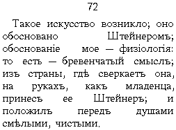
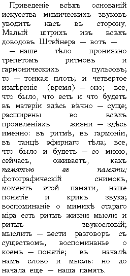
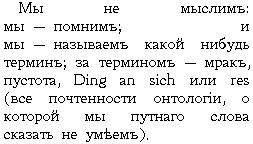
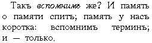
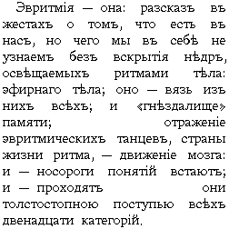
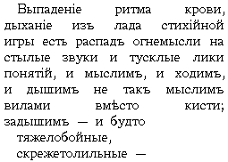
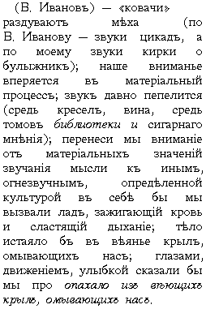

Glossolalia (Section 72)
GLOSSOLALIA

Such an art has risen up; it was founded by Steiner; my basis is -- physiology: it is -- a primitive log cabin of meaning; Steiner bore this art from the land, where it sparkles, in his arms, like a baby; and he placed it before souls brave, pure.

The introduction of all the foundations of the art of mimical sounds can lead us off on a tangent/to the side. A tiny dash (Strich) from all of the conclusions of Steiner -- here -- our body is penetrated by the trembling of rhythms and harmonic pulses; this is -- delicate flesh; and it is -- the fourth dimension (time); everything, that was, that is and that will be in matter is eternal here -- existing; the expansion in all manifestations of life are -- precisely here: in rhythm, in harmony, in the dance of the ether body; everything, what was, and what will be is-- with me, right now, it comes alive, like the memory in memory; a photograph, a moment of this memory, our concept and the screech of a sound; remembrance of the mimicry of the old world is the rhythm of life of thought and the rhythm of sound-words; to think is -- to carry on a conversation with a being, the remembrance of whom is -- a concept; in the beginning there was the word and the thought for us; but even before the beginning there was already -- our memory.

We do not think: we -- remember; and we -- name things with a certain term; beyond the term -- there is murkiness, emptiness, Ding an sich or res (with all due respect to Ontology, about which we don't have a sensible word to say).

So shall we remember? And the memory of memory sleeps; our memory is short: we will remember the term; and -- only that.

Eurythmy -- it is: a tale in gestures about, that which is in us, but which we ourselves can not recognize without the opening of the depth/abyss, illuminated by rhythms of the body; of the ether body; it is -- the calligraphy of us all; and the "nesting place" of memory; the reflection of eurythmic dances, of the land of the life of rhythm, are -- a movement of the brain: and -- rhinoceri of concepts arise; and -- with their heavy hoofed walk they pass by all twelve categories.

The fallout of the rhythm of blood, the breathing out of harmony of the play of the elements is the fall of fire-thought onto congealing sounds and dull countenances of concepts; and we think, and walk, and breathe the wrong way: we think with pitchforks instead of with a paint brush; we begin to breathe -- and it is as if heavybeating, gnashing-bashing [skrezhetolil'nye] --

(V. Ivanov) -- "blacksmiths" blow up the bellows (for V. Ivanov -- sounds are cicadas, but for me sounds are pick-axes against the cobble stones); our attention is focused on the material process; sound has long since settled like ashes [pepelitsya] amidst the armchairs, wine, amidst the tomes of a library and cigar-smoked mindset); if we would transfer our attention away from the material designations of the sounds of thought to different, fire-sounding ones, we would summon by a certain culture within us a harmony, which inflames our blood and sweetens our breathing; the body would melt in the wafting of wings, washing over us; with eyes, movement, and a smile we would speak of the fan of waving wings, washing over us.